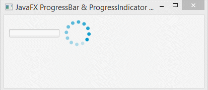
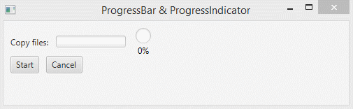

És una especialització del ProgressIndicator que es representa com una barra horitzontal. La barra de progrés generalment mostra la quantitat de finalització d’una tasca.
Els constructors de la classe ProgressBar són:
Mètodes d’ús comú:
És un control circular que s’utilitza per a indicar el progrés, ja siga infinit o finit. Sovint s’utilitza amb la API de tasques per a representar el progrés de les tasques en segon pla. En general, mostra la quantitat de finalització d’una tasca.
Constructor de la classe són:
Mètodes d’ús comú
El següent programa il·lustra l’ús de l’indicador de progrés i de progress bar sense temps determinat:

A continuació s’observa un Progress Bar i un Progress Indicator per una determinada tasca:
